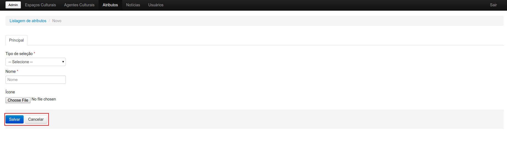
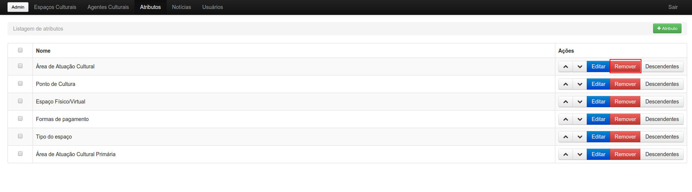
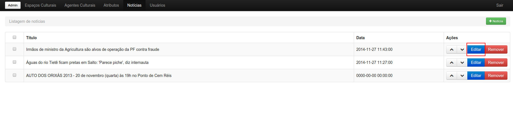

- 1 - Login
-
Para efetuar o "login", é necessário por email e senha corretos de um usuário cadastrado do nível 2 ou 1.
- 2 - Espaços Culturais: adição, edição e remoção
-
Ao logar-se, o usuário pode observar um menu na parte superior da tela.
Clicando na opção "Espaços Culturais", se houver algum espaço adicionado, é mostrada uma listagem de espaços culturais logo abaixo do menu.
Lá o usuário enconta todas as possíveis opções para lidar com os espaços: adição, edição, remoção e mudar a ordenação.
- 2.1 - Adição
-
Para adicionar um espaço cultural, o usuário deve clicar no botão "+ Espaço Cultural" que se encontra no campo direito superior da tela.
Ao clicar nessa opção, um formulário com os campos do espaço cultural, à serem preenchidos, é mostrado na tela.
-
Os campos são:
- Nome do espaço
- Slug(criado automaticamente baseado no nome do espaço)
- Natureza Jurídica
- Tipo do espaço
- Nome do responsável
- Espaço físico/virtual
- Ponto de cultura
- Área de atuação cultural primária
- Áreas de atuações culturai secundárias
- Endereço
- Cep
- Complemento
- Latitude e Longitude (que são definidas automáticamente ao selecionar a localização do espaço no mapa)
- Atividades Culturais
- Celular
- Telefone fixo
- Telefone comercial
- Endereço do site
- Preço mínimo
- Preço máximo
- URL da agenda cultural
- Formas de pagamento
- Google+
- YouTube
- Outras redes sociais
- Horário de funcionamento
- Fechado no horário de almoço (entre 12:00 e 14:00)
- Informações Adicionais
Para adicionar fotos ao espaço, o usuário deve clicar na aba "Fotos" que fica acima do formulário.
Então o usuário só precisa clicar em "Adicionar" e escolher o arquivo de imagem válido(.jpg, .gif e .png) do seu computador. Não deve ser colocado arquivos com transparência nos formatos .gif e .png.
Após o correto preenchimento dos campos e das fotos(opcional), o usuário pode adicionar o espaço clicando em "Salvar" ou "Cancelar" caso desista do processo.
- 2.2 - Edição
-
Para editar um espaço cultural, o usuário deve clicar no botão "Editar" correspondente ao espaço que deseja alterar.
Logo em seguida, é mostrado na tela um formulário igual ao de adição com os campos já preenchidos. O usuário deve escolher o campo que quer alterar e em seguida clicar no botão "Salvar" logo abaixo do formulário.
- 2.3 - Remoção
-
Se o usuário deseja remover um Espaço Cultural, ele deve procurar na linha do respectivo espaço, o botão "Remover".
Caso o usuário queira remover mais de um Espaço de uma vez, ele deve clicar na opção "Remover todos" que aparece ao selecionar um ou mais espaços.
- 2.4 - Ordenação
-
O administrador pode mudar a ordem com que os Espaços irão aparecer para o usuário do site, apenas mudando a ordenação dos mesmos na listagem. Para isso, o administrador deve clicar nas setas "para cima" ou "para baixo" de acordo como quer que os espaços estejam dispostos.
- 3 - Agentes Culturais: adição, edição e remoção
-
Na parte superior da tela, o usuário pode observar um menu. Ao clicar em "Agentes Culturais", o usuário tem acesso a uma listagem de todos agentes cadastrados.

Nessa sessão o usuário pode adicionar, editar, remover e ordenar os agentes culturais
- 3.1 - Adição
-
Para adicionar um Agente Cultural, o usuário deve clicar no botão "+ Agente Cultural".
Ao clicar nessa opção, um formulário com os campos do agente cultural, à serem preenchidos, é mostrado na tela.
-
Os campos são:
- Nome do responsável
- Slug(criado automaticamente baseado no nome do responsável)
- Natureza Jurídica
- Espaço físico/virtual
- Área de atuação cultural primária
- Áreas de atuações culturais secundárias
- Endereço
- Cep
- Complemento
- Latitude e Longitude (que são definidas automáticamente ao selecionar a localização do espaço no mapa)
- Atividades culturais
- Celular
- Telefone fixo
- Telefone comercial
- Endereço do site
- URL da agenda cultural
- Google+
- YouTube
- Outras redes sociais
- Horário de funcionamento
- Fechado no horário de almoço (entre 12:00 e 14:00)
- Informações Adicionais
Para adicionar fotos ao agente, o usuário na aba "Fotos" que fica acima do formulário.
Então o usuário só precisa clicar em "Adicionar" e escolher o arquivo de imagem válido(.jpg, .gif e .png) do seu computador. Não deve ser colocado arquivos com transparência nos formatos .gif e .png.
Após o correto preenchimento dos campos e das fotos(opcional), o usuário pode adicionar o agente clicando em "Salvar" ou "Cancelar" caso desista do processo.
- 3.2 - Edição
-
Para editar um agente cultural, o usuário deve clicar no botão "Editar" correspondente ao agente que deseja alterar.
Logo em seguida, é mostrado na tela um formulário igual ao de adição com os campos já preenchidos. O usuário deve escolher o campo que quer alterar e em seguida clicar no botão "Salvar" logo abaixo do formulário.
- 3.3 - Remoção
-
Se o usuário deseja remover um Agente Cultural, ele deve procurar na linha do respectivo agente, o botão "Remover".
Caso o usuário queira remover mais de um Agente de uma vez, ele deve clicar na opção "Remover todos" que aparece ao selecionar um ou mais agentes.
- 3.4 - Ordenação
-
O administrador pode mudar a ordem com que os Agentes irão aparecer para o usuário do site, apenas mudando a ordenação dos mesmos na listagem. Para isso, o administrador deve clicar nas setas "para cima" ou "para baixo" de acordo como quer que os agentes estejam dispostos.
- 4 - Atributos: adição, edição e remoção
-
Na parte superior da tela, o usuário pode observar um menu. Ao clicar em "Atributos", o usuário tem acesso a uma listagem de todos atributos cadastrados.
Nessa sessão o usuário pode adicionar, editar, remover e ordenar os atributos. Além disso ele pode ir para a listagem dos descendentes de cada atributo.
- 4.1 - Adição
-
Para adicionar um Atributo, o usuário deve clicar no botão "+ Atributo".
Ao clicar nessa opção, um formulário com os campos do atributo, à serem preenchidos, é mostrado na tela.
-
Os campos são:
- Tipo de seleção
- Nome do atributo
Após o correto preenchimento dos campos, o usuário pode adicionar o atributo clicando em "Salvar" ou "Cancelar" caso desista do processo.

- 4.2 - Edição
-
Para editar um atributo, o usuário deve clicar no botão "Editar" correspondente ao agente que deseja alterar.
Logo em seguida, é mostrado na tela um formulário igual ao de adição com os campos já preenchidos. O usuário deve escolher o campo que quer alterar e em seguida clicar no botão "Salvar" logo abaixo do formulário.
- 4.3 - Remoção
-
Se o usuário deseja remover um Atributo, ele deve procurar na linha do respectivo atributo, o botão "Remover".
Caso o usuário queira remover mais de um Atributo de uma vez, ele deve clicar na opção "Remover todos" que aparece ao selecionar um ou mais atributos.
- 4.4 - Ordenação
-
O administrador pode mudar a ordem com que os atributos irão aparecer para o usuário do site, apenas mudando a ordenação dos mesmos na listagem. Para isso, o administrador deve clicar nas setas "para cima" ou "para baixo" de acordo como quer que os atributos estejam dispostos.
- 4.5 - Descendentes
-
Para ver os descendentes dos atributos, o usuário deve clicar no botão "Descendentes" do respectivo atributo. Se ele quiser ver os descendentes de um descendente, basta clicar no botão "Descendentes" do mesmo.
Obs.: Para adicionar, editar, remover e ordenar os descendentes de algum atributo, basta fazer igual à um atributo normal.
- 5 - Notícias: adição, edição, remoção e ordenação
-
Na parte superior da tela, o usuário pode observar um menu. Ao clicar em "Notícias", o usuário tem acesso a uma listagem de todas notícias cadastradas.
Nessa sessão o usuário pode adicionar, editar, remover e ordenar as notícias
- 5.1 - Adição
-
Para adicionar uma Notícia, o usuário deve clicar no botão "+ Notícia".
Ao clicar nessa opção, um formulário com os campos da notícia, à serem preenchidos, é mostrado na tela.
-
Os campos são:
- Título
- Conteúdo
- Autor
- Slug(criado automaticamente baseado no título)
- Data
Para adicionar um vídeo ao campo "Conteúdo" de uma notícia, o usuário deve ir no youtube ou vimeo, escolher o vídeo, copiar a URL.
Em seguida deve voltar ao admin do site, clicar no botão de adição de vídeo,
colar o código previamente copiado e clicar em "OK".
Do mesmo jeito você pode adicionar vídeos em Espaços, Agentes e Eventos.
Já para adicionar fotos à notícia, o usuário deve clicar na aba "Fotos" que fica acima do formulário.
Então o usuário só precisa clicar em "Adicionar" e escolher o arquivo de imagem válido(.jpg, .gif e .png) do seu computador. Não deve ser colocado arquivos com transparência nos formatos .gif e .png.
Após o correto preenchimento dos campos e das fotos(opcional), o usuário pode adicionar a notícia clicando em "Salvar" ou "Cancelar" caso desista do processo.
- 5.2 - Edição
-
Para editar uma notícia, o usuário deve clicar no botão "Editar" correspondente à notícia que deseja alterar.
Logo em seguida, é mostrado na tela um formulário igual ao de adição com os campos já preenchidos. O usuário deve escolher o campo que quer alterar e em seguida clicar no botão "Salvar" logo abaixo do formulário.
- 5.3 - Remoção
-
Se o usuário deseja remover uma notícia ele deve procurar, na linha da respectiva notícia, o botão "Remover".
Caso o usuário queira remover mais de uma notícia de uma vez, ele deve clicar na opção "Remover todos" que aparece ao selecionar uma ou mais notícias.
- 5.4 - Ordenação
-
O administrador pode mudar a ordem com que as notícias irão aparecer para o usuário do site, apenas mudando a ordenação das mesmas na listagem. Para isso, o administrador deve clicar nas setas "para cima" ou "para baixo" de acordo como quer que as notícias estejam dispostas.

- 6 - Usuários: adição, edição e remoção
-
Na parte superior da tela, o administrador pode observar um menu. Ao clicar em "Usuários", o administrador tem acesso a uma listagem de todos usuários cadastrados.
Nessa sessão o administrador pode adicionar, editar, remover e ordenar os usuários.
- 6.1 - Adição
-
Para adicionar um Usuário, o administrador deve clicar no botão "+ Usuário".
Ao clicar nessa opção, um formulário com os campos do usuário, à serem preenchidos, é mostrado na tela.
-
Os campos são:
- Ativo
- Nome
- Senha
- Comfirmação de senha
- Nível do Usuário
Após o correto preenchimento dos campos, o administrador pode adicionar o usuário clicando em "Salvar" ou "Cancelar" caso desista do processo.
- 6.2 - Edição
-
Para editar um usuário, o administrador deve clicar no botão "Editar" correspondente ao usuário que deseja alterar.
Logo em seguida, é mostrado na tela um formulário igual ao de adição com os campos já preenchidos. O administrador deve escolher o campo que quer alterar e em seguida clicar no botão "Salvar" logo abaixo do formulário.
- 6.3 - Remoção
-
Se o administrador deseja remover um usuário ele deve procurar, na linha do respectivo usuário, o botão "Remover".
Caso o administrador queira remover mais de um usuário de uma vez, ele deve clicar na opção "Remover todos" que aparece ao selecionar um ou mais usuários.
- 7 - Eventos: adição, edição e remoção
-
Ao editar um espaço cultural, o usuário clica em "Eventos"(na parte superior direita da tela) e tem acesso a uma listagem de todos eventos cadastrados para aquele espaço.
Nessa sessão o usuário pode adicionar, editar e remover os eventos.
- 7.1 - Adição
-
Para adicionar um evento, o usuário deve clicar no botão "+ Evento".
Ao clicar nessa opção, um formulário com os campos do evento, à serem preenchidos, é mostrado na tela.
-
Os campos são:
- Título
- Slug(criado automaticamente baseado no título)
- Data
- Horário
- Descrição
- Informações de valores
- Informações de datas
- Informações de horários
- Imagem de capa
- Agentes Culturais envolvidos
Para adicionar fotos ao evento, o usuário deve clicar na aba "Fotos" que fica acima do formulário.
Então o usuário só precisa clicar em "Adicionar" e escolher o arquivo de imagem válido(.jpg, .gif e .png) do seu computador. Não deve ser colocado arquivos com transparência nos formatos .gif e .png.
Após o correto preenchimento dos campos e das fotos(opcional), o usuário pode adicionar o evento clicando em "Salvar" ou "Cancelar" caso desista do processo.
- 7.2 - Edição
-
Para editar um evento, o usuário deve clicar no botão "Editar" correspondente ao evento que deseja alterar.
Logo em seguida, é mostrado na tela um formulário igual ao de adição com os campos já preenchidos. O usuário deve escolher o campo que quer alterar e em seguida clicar no botão "Salvar" logo abaixo do formulário.
- 7.3 - Remoção
-
Se o usuário deseja remover um evento ele deve procurar, na linha do respectivo evento, o botão "Remover".
Caso o usuário queira remover mais de um evento de uma vez, ele deve clicar na opção "Remover todos" que aparece ao selecionar um ou mais eventos.
- 8 - Níveis de usuário
-
- Nível 0 - Usuário do site
-
Gerencia o seu próprio perfil e adiciona eventos à sua agenda. Não pode se logar no admin.
- Nível 1 - Colaborador
-
Criar e ver todos os espaços culturais,agentes e notícias.
- Nível 2 - Administrador
-
Pode criar e ver e editar todos os espaços culturais, agentes, eventos, usuários, atributos, notícias. Pode, ainda, criar e alterar as permissões.